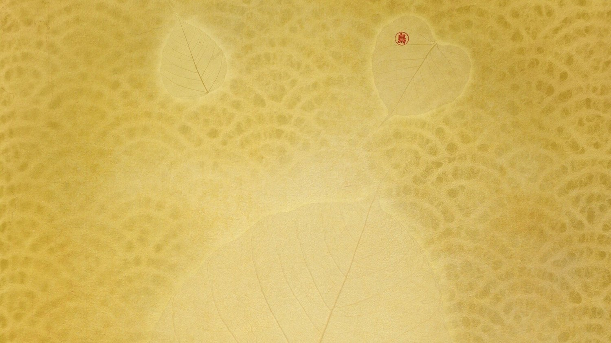

The hour before sunrise
The book’s introduction starts in an ordinary moment: an early morning and a few lines waiting to be written.
An encounter in art & poetry
Love Made Visible Through Art & Poetry

The published book cover 01 / 01
Not illustration beside a poem.
Taste the Sky brings together Rashani Réa’s collage art and Chelan Harkin’s poetry. Image and language are given equal presence: an invitation to linger, notice, and return.
The book is a 104-page collaboration published by Xlibris. Its pages offer a meeting place for contemporary spiritual poetry and visually layered art.

To look closely
is its own kind
of listening.
From Rashani’s published introduction
In the introduction to Taste the Sky, Rashani writes of opening her laptop before sunrise. An unexpected message interrupts her writing—and turns her thoughts toward the natural world, contemplation, and living without a prescribed path.
Read the published introductionThe book’s introduction starts in an ordinary moment: an early morning and a few lines waiting to be written.
Rashani reflects on creation spirituality and the sacred as encountered through the natural world.
Her reflection turns toward Krishnamurti’s language of a pathless journey, a recurring thread in her life and practice.
An exchange across forms
The visual voice
Collage artist, writer and retreat leader. Her layered images grow from a lifelong commitment to making art, exploring grief and living in close relationship with the land.
The poetic voice
A poet whose words accompany Rashani’s images in this collection, bringing a second artistic perspective to the themes of love, vulnerability and the sacred.
Rashani’s wider practice
Rashani began exploring poetry and brush painting as a child and later made collage a central part of her creative life. She founded Sacred Spiral Press in 1982, and has long brought contemplative inquiry and art into her work with others.
At Kipukamaluhia, her sanctuary on Hawaiʻi Island, land stewardship, councils and retreats are part of that larger practice. Taste the Sky is one expression of it, not the whole story.
Explore Rashani’s existing websiteA collection to return to
Discover Taste the Sky in print or ebook. The publisher lists the 2022 edition in both formats.
Find the book at XlibrisRashani Réa · Chelan Harkin · ISBN 9781669830047 (softcover)